Duskpane demo
A short video and screenshots of the template at work. These are pictures only; the template files are in the download after you buy.
Video of screenshots (26 seconds, no sound)
It shows the home page, the page map, the list and one item, the switch to light, a phone-width view, and the free customizer changing a look. The sample names and numbers are made up.
Screenshots
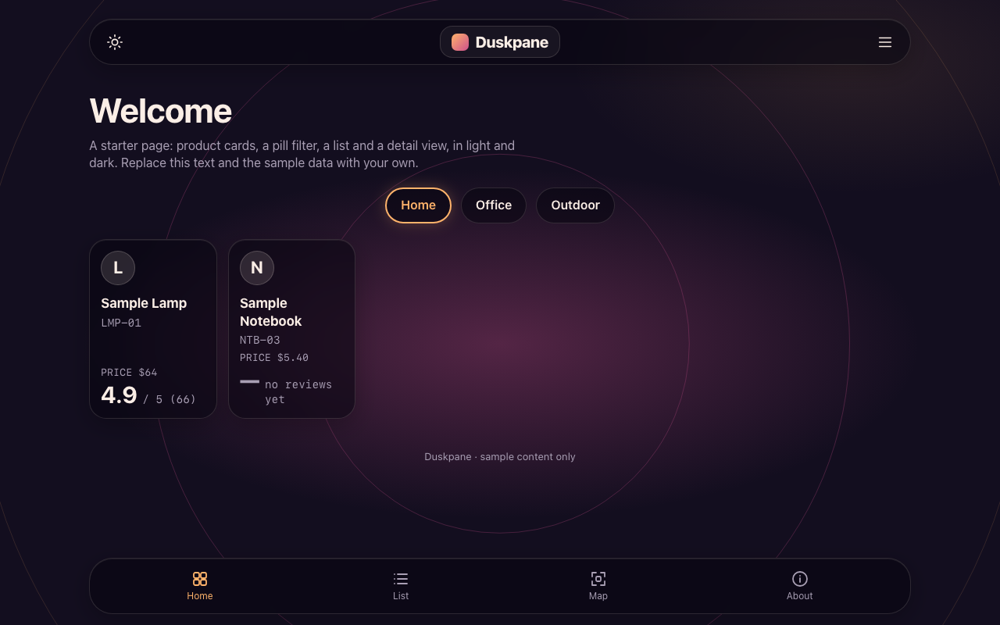

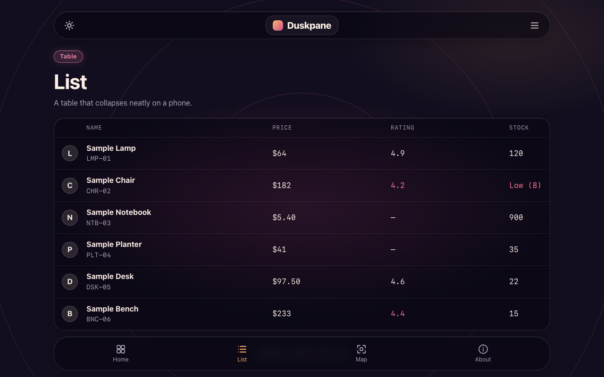

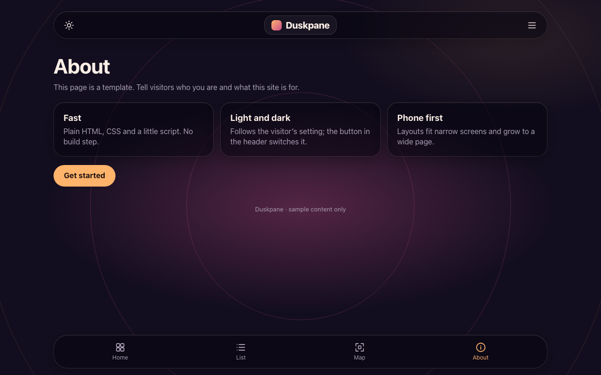
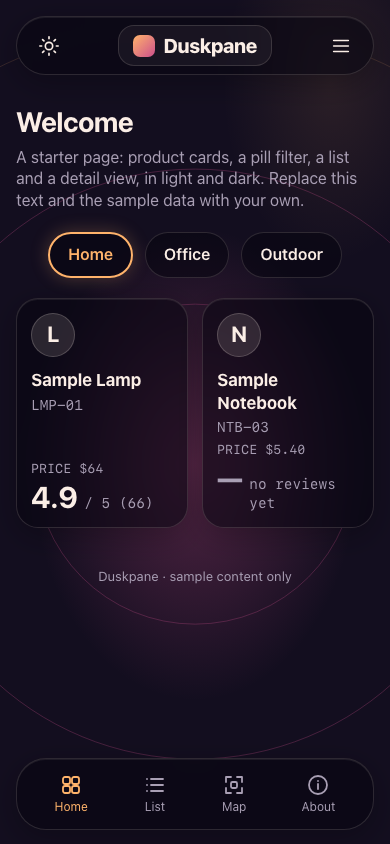

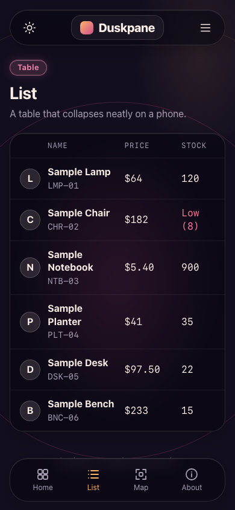


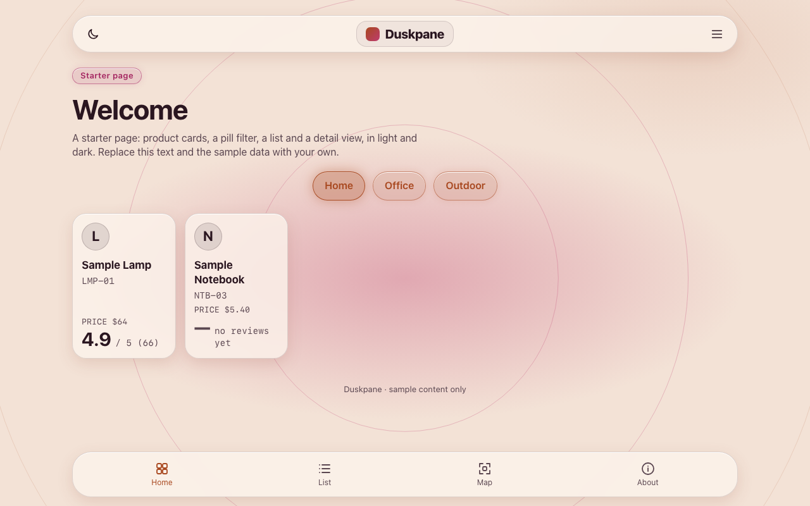
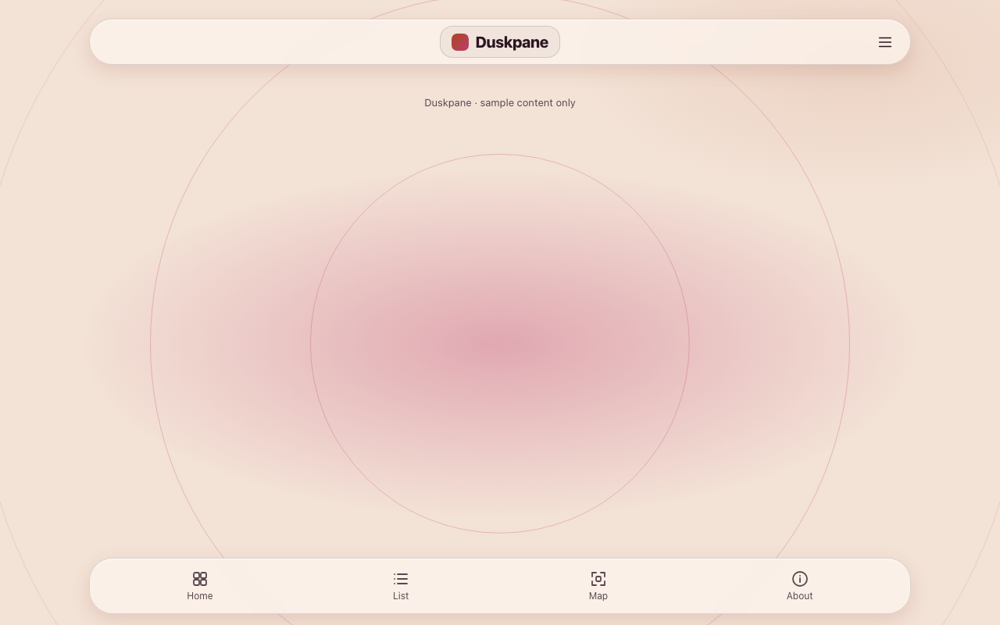
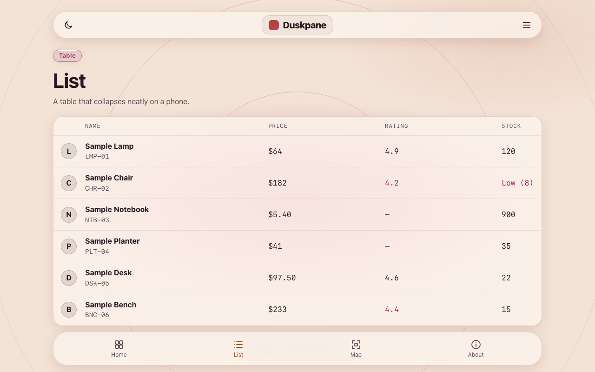

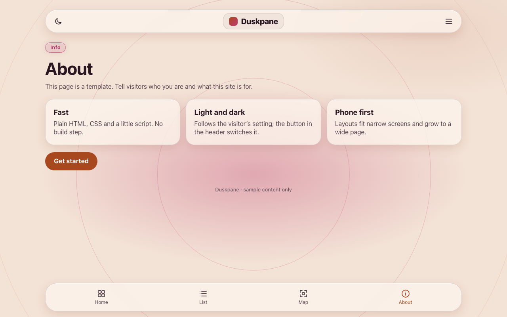
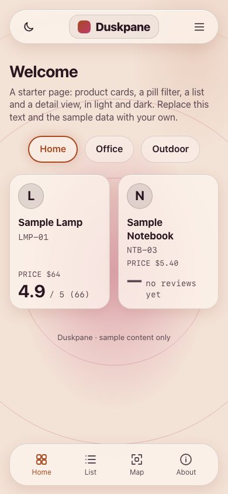


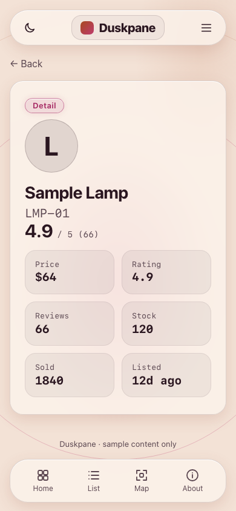
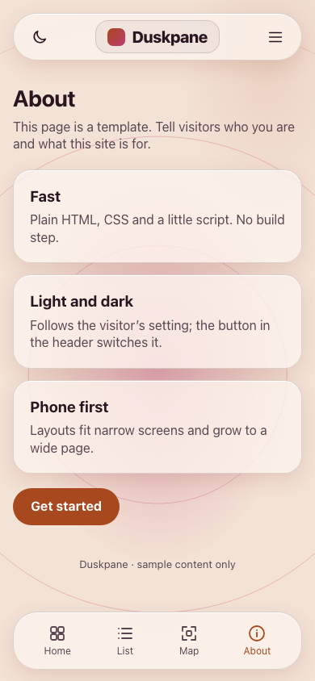